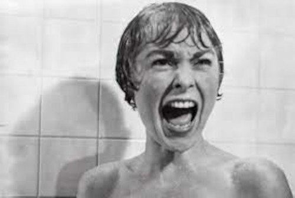
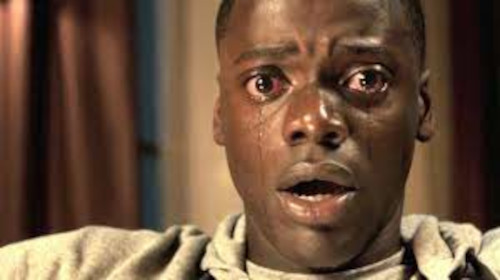

Venham passar medo comigo 🔪
Psicose (1960)
Sinopse: Após roubar 40 mil dólares para se casar com o namorado, uma mulher foge durante uma tempestade e decide passar a noite em um hotel que encontra pelo caminho. Ela conhece o educado e nervoso proprietário do estabelecimento, Norman Bates, um jovem com um interesse em taxidermia e com uma relação conturbada com sua mãe. O que parece ser uma simples estadia no local se torna uma verdadeira noite de terror.
➡️ Veja o Trailer aqui ⬅️
O Bebê de Rosemary (1968)
Sinopse: Um casal se muda para um prédio com pessoas estranhas. Acontecimentos ainda mais estranhos levam a jovem, que está grávida, a duvidar de sua própria sanidade. Porém, o parto e a descoberta de uma seita diabólica irão finalmente mostrar a verdade.

➡️ Veja o Trailer aqui ⬅️
O Exorcista (1973)
Sinopse: Uma atriz vai gradativamente tomando consciência de que a sua filha de doze anos está tendo um comportamento completamente assustador. Deste modo, ela pede ajuda a um padre, que também é um psiquiatra, e este chega a conclusão de que a garota está possuída pelo demônio. Ele solicita então a ajuda de um segundo sacerdote, especialista em exorcismo, para tentar livrar a menina desta terrível possessão.

➡️ Veja o Trailer aqui ⬅️
Corra! (2017)
Sinopse: Chris é um jovem fotógrafo negro que está prestes a conhecer os pais de Rose, sua namorada caucasiana. Na luxuosa propriedade dos pais dela, Chris percebe que a família esconde algo muito perturbador.
➡️ Veja o Trailer aqui ⬅️
A Morte do Demônio (2013)
Sinopse: Mia é uma viciada em drogas que, para vencer seus demônios pessoais, vai com seu irmão David, a namorada do irmão, Natalie, e os amigos de infância Olivia e Eric até uma cabana rústica, que pertence à família. Assim que chegam, descobrem que a cabana foi invadida e que o porão parece uma espécie de altar, rodeado por animais mumificados, onde a descoberta de um Livro dos Mortos invoca forças demoníacas. A presença do mal os possui até que apenas um é deixado a lutar pela sobrevivência.
 ➡️ Veja o Trailer aqui ⬅️
➡️ Veja o Trailer aqui ⬅️
A Entidade (2012)
Sinopse: Um autor de romances criminais encontra uma caixa com filmagens antigas de crimes horripilantes, que parecem ter sido cometidos por um assassino em série. Ao investigar, ele e sua família se tornam alvos de uma entidade sobrenatural maligna.
 ➡️ Veja o Trailer aqui ⬅️
➡️ Veja o Trailer aqui ⬅️
Pânico 4 (2011)
Sinopse: Faz muitos anos que o assassino "Ghostface" deixou um rastro mortal pela cidade de Woodsboro. A fim de superar o trauma desses terríveis acontecimentos, Sidney Prescott escreveu um livro de auto-ajuda. Ela retorna à Woodsboro para lançar seu livro e reencontra os velhos amigos Gale Weathers e o Xerife Dewey. No entanto, a chegada de Sidney também provoca o retorno de "Ghostface", colocando Sidney e todos que ama em perigo.
 ➡️ Veja o Trailer aqui ⬅️
➡️ Veja o Trailer aqui ⬅️